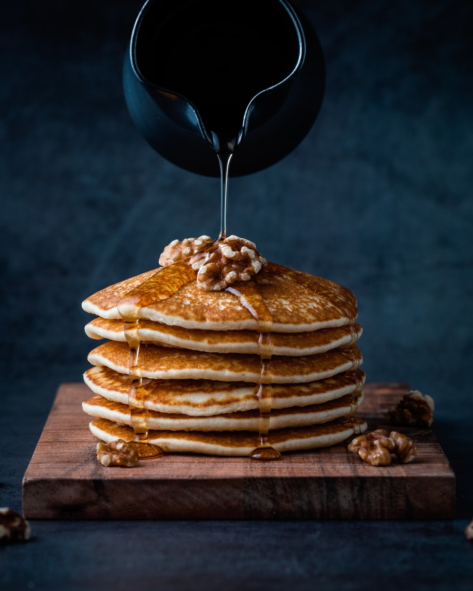

Pancakes

Say goodbye to the boxed pancake mix.
Everything you need to make delicious pancakes is probably sitting in your kitchen right now. This recipe is easy! The pancakes aren’t too sweet and are lightly scented with vanilla.
They are delicious and they are easily adapted to what you have in your kitchen. Let’s do this!
Ingredients
- 1 ½ cups (195 grams) all-purpose flour,
- 2 tablespoons sugar
- 1 tablespoon aluminum-free baking powder
- 1/2 teaspoon of fine sea salt
- 1 large egg
- 4 tablespoons unsalted butter, melted
- 1 teaspoon vanilla extract
Steps
- Whisk flour, sugar, baking powder, and the salt in a medium bowl.
- Warm milk in the microwave or on top of the stove until lukewarm, not hot.
- Whisk milk, egg, melted butter, and vanilla extract until combined.
- Heat a large skillet (or use griddle) over medium heat.
- Make a well in the center of the flour mixture, pour milk mixture into the well
and use a fork to stir until you no longer see clumps of flour.
- Use a 1/4-cup measuring cup to spoon batter onto the skillet.
Gently spread the batter into a 4-inch circle.
- Cook each side for about two minutes. Serve immediately with warm syrup, butter, and berries.